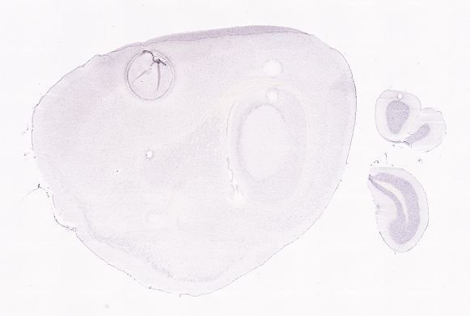
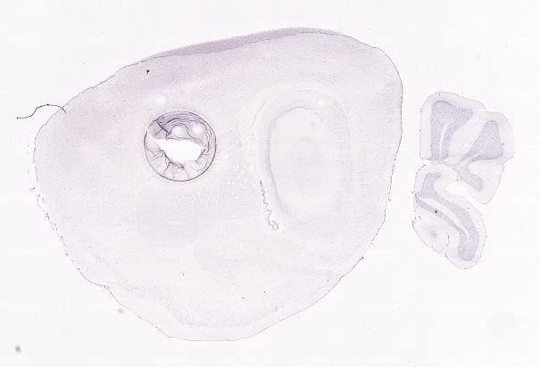
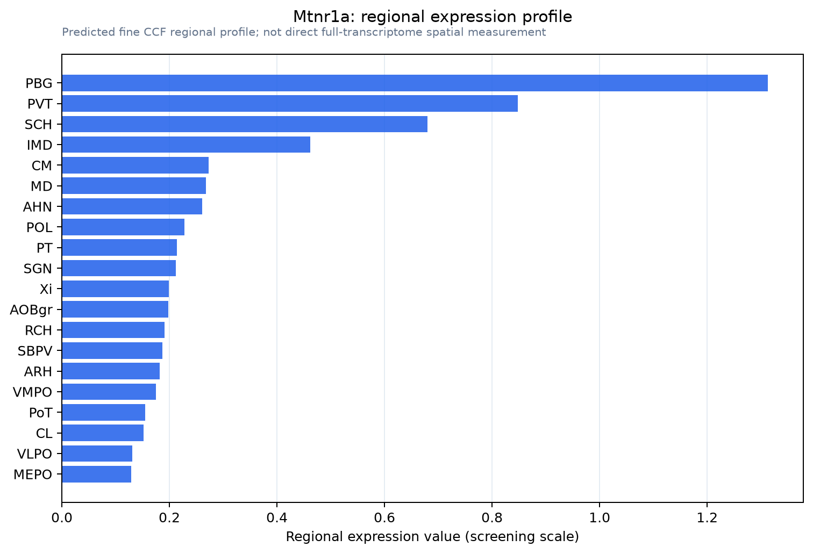

Mtnr1a
Melatonin receptor type 1A (Mel-1A-R) (Mel1a receptor)
Spatial tier: STRICT_EXCLUSIVE · Class: GPCR · Top region: PBG (Parabigeminal nucleus) · Positive regions: 4/554
47.1Discovery Score
41.1Targetability Score
CEvidence grade C
What this means: Mtnr1a: predicted fine-region profile is strict-exclusive, with 4 positive regions out of 554 (limit 12); direct spatial validation is required.
Function in PBG: evidence, prediction, innovation
- Gene function
- MTNR1A encodes MT1, the high-affinity Gi/o-coupled melatonin receptor; melatonin inhibits adenylyl cyclase, lowers cAMP/PKA and opens GIRK channels, damping firing. MT1 mediates acute inhibitory and phase-shifting melatonin effects in the SCN and photoperiodic reproductive control via the pars tuberalis.
- Region function
- The parabigeminal nucleus is a cholinergic satellite of the superior colliculus shaping visual surround inhibition and looming sensitivity and driving defensive freezing and escape.
- Published in this region
- inferred No region-specific literature found. Closest, whole-brain mapping: Klosen et al. 2019 found MT1 in few structures, chiefly SCN and pars tuberalis, MT2 in many including superior colliculus, the PBG's main partner; Adamah-Biassi et al. 2014 found MT1-promoter RFP in subcommissural organ, ventricular ependyma, habenula, hippocampus and cerebellum, none in PBG.
- Predicted function
- Prediction: MT1 in parabigeminal cholinergic neurons would be a melatonin-timed nocturnal brake on the tecto-parabigeminal loop, lowering cholinergic gain in superficial SC. Local melatonin or ramelteon should hyperpolarise PBG neurons and raise the looming intensity for escape; Mtnr1a knockout, or melatonin-deficient C57BL/6 versus proficient C3H, should abolish day-night escape-latency differences.
- Innovation
- ★★★★☆ 4/5 Melatonin action on a defensive visual midbrain nucleus is unexplored and testable with existing MT1 knockouts.
- Tools
- Mtnr1a knockout and MT1 knock-in reporter/Cre lines (Klosen et al. 2019); BAC MT1-RFP mouse (Adamah-Biassi et al. 2014); agonists melatonin, ramelteon, 2-iodomelatonin; MT1-preferring antagonists luzindole and S26131 (4P-PDOT is MT2-selective); C3H/HeN melatonin-proficient background.
- References
Direct evidence located at the region
No Allen ISH section could be located at this region's centroid for the recorded experiments.
Look it up yourself: Allen Mouse Brain ISH for Mtnr1aAllen reference atlas: PBG (structure 874)ABC Atlas MERFISH viewer(in the ABC Atlas choose dataset MERFISH-C57BL6J-638850-CCF, colour cells by gene "Mtnr1a" or by parcellation_substructure "PBG")All genes confined to PBG + 3-D brain
Direct spatial evidence
MERFISH REGION LOCATOR

DIRECT ALLEN ISH

DIRECT ALLEN ISH

Regional expression figure

Predicted WMB × fine-CCF profile; not direct full-transcriptome spatial measurement.
Spatial profile
Evidence and specificity
- Evidence status
- PREDICTED_FINE
- Direct sources
- None; predicted localization only
- Exclusive threshold
- 12 positive regions out of 554
- Spatial specificity
- 0.367
- Top-region fraction
- 0.133
- Filter status
- PASS
Interpretation limits
- Cell-type-to-region projection is imputed expression, not direct spatial measurement.
- Adult reference atlases do not establish stability across age, sex, strain, state, or disease.
- Transcript abundance does not guarantee protein abundance or genetic-tool performance.